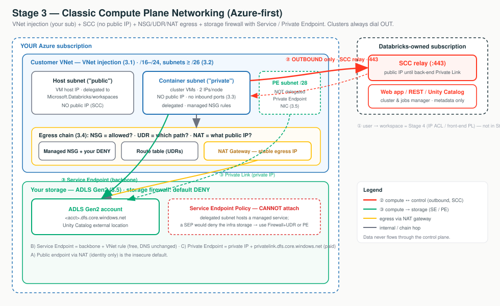

Stage 2 said there are only three doors: ① users in, ② compute ↔ control, ③ compute → your data. Stage 3 is the construction project for the building behind doors ② and ③ — the classic compute plane, where Databricks runs Spark on VMs in your Azure subscription.
Classic compute is a building you lease land for and fit out yourself. ① Pick the lot (managed VNet = locked apartment vs VNet injection = your plot — permanent). ② Pour the foundation (two equal address streets, sized for peak — you can't re-pave). ③ Wire the intercom (SCC: the building always dials out, so no inbound door). ④ Build the loading dock (NSG = if, UDR = which road, NAT = return address). ⑤ Run a private corridor to the shop (storage: public / Service Endpoint / Private Endpoint). SCC keeps clusters private in both VNet models; injection is what lets you own every other hop — and most of these are one-way doors.

| Path | What travels | Stage-3 control |
|---|---|---|
| ① User → Databricks | Browser / BI / REST → workspace URL | Not in Stage 3 — IP ACL / front-end PL (Stage 4) |
| ② Compute ↔ Control | Cluster phones home to be managed | 3.3 SCC (inbound) + 3.4 egress (outbound); back-end PL later |
| ③ Compute → Storage | Cluster reads/writes your ADLS | 3.5 storage firewall + Service/Private Endpoint (via 3.4 plumbing) |
| (All) | — | 3.1 injection owns the pipes; 3.2 sizing caps the node count |
"Clusters run in your VNet with no public IPs and no open inbound ports; they dial out to the control plane. Egress leaves on a stable NAT IP you can allowlist, and your data stays in your firewalled ADLS Gen2 reached over the Microsoft backbone."
Microsoft.Databricks/workspaces to auto-manage it. → 3.1The first decision: let Databricks run a locked managed VNet, or inject the workspace into a VNet you own. The choice is permanent and it gates every advanced control. Switch the diagram and click any box for the "what + why."
You can't convert a managed-VNet workspace to injection later (that's a rebuild + migration). NSG egress rules, UDR→firewall, service/private endpoints, back-end Private Link, on-prem routing — all require injection. SCC / No Public IP works in both; injection adds the customization.
| Dimension | Managed VNet | VNet injection |
|---|---|---|
| Who owns it | Databricks, locked, managed RG | You, your subscription |
| CIDR / NSG Deny / UDR | ❌ none selectable | ✅ you control |
| Service/Private Endpoint, back-end PL, on-prem | ❌ | ✅ |
| SCC / No Public IP | ✅ default | ✅ default, recommended |
| Convert later | ❌ not convertible | n/a |
| Use for | POC / demo / training | Any production / regulated |
Terraform (azurerm) — the lines that teach the point. Full module is the Stage-3 hands-on artifact.
resource "azurerm_subnet" "host" { # both subnets PRIVATE under SCC
address_prefixes = ["10.179.0.0/18"]
delegation { # REQUIRED: lets Databricks manage the subnet
name = "databricks-del"
service_delegation { name = "Microsoft.Databricks/workspaces" }
}
}
resource "azurerm_databricks_workspace" "this" {
sku = "premium"
custom_parameters {
virtual_network_id = azurerm_virtual_network.adb.id # <-- THIS declares VNet injection
no_public_ip = true # SCC in either model
}
}Portal: Create → Azure Databricks → Networking → Deploy in your own VNet = Yes → pick the VNet + host/container subnets. Verify: VNet → Subnets → both show an NSG + Delegation = Microsoft.Databricks/workspaces.
Editing a Databricks-managed NSG rule is futile — the network intent policy reconciles it back; add your own Deny rules instead. And Service Endpoint Policies: workspaces created on/after 2025-07-14 support them by default; older ones need account-team enablement (injection + SCC + unlocked RG). Verify per workspace.
A VNet-injected workspace needs two equal subnets — host + container. Every node is a duplex that burns one IP in each, and you can never re-pave the streets. Switch the diagram between the node-IP view and the sizing-math view.
"Subnet CIDR ranges cannot be changed after deployment." A too-small subnet caps how many nodes the workspace can ever run. The only fixes — the Public-Preview Update workspace network configuration migration or an account-team CIDR increase — both involve downtime.
| Subnet | Usable (total − 5 reserved) | ≈ Max nodes (all clusters) |
|---|---|---|
/26 (recommended floor) | 59 | ~59 |
/24 | 251 | ~251 |
/22 | 1,019 | ~1,019 |
/20 | 4,091 | ~4,091 |
VNet /16–/24; subnets up to /26 (min /28). Azure
reserves 5 IPs/subnet. Max nodes ≈ 2^(32 − prefix) − 5, counted across all running clusters at once.
resource "azurerm_virtual_network" "adb" {
address_space = ["10.179.0.0/16"] # /16: room for big subnets + a future PL subnet
}
resource "azurerm_subnet" "host" { address_prefixes = ["10.179.0.0/18"] } # 16,379 usable
resource "azurerm_subnet" "container" { address_prefixes = ["10.179.64.0/18"] } # MUST equal host, no overlap
# 10.179.128.0/18 left FREE -> headroom for a /27-/28 Private Link subnet (Stage 4).Portal: VNet → IP addresses (set space a couple of bits larger than the subnets) → + Add subnet twice (equal, non-overlapping, leave a gap) → deploy the workspace into them.
Dev/small → /26; typical team → /24; large/concurrent → /22–/20.
When peak is unknown, size up — IPs are free; a resize is a downtime outage. Always leave the VNet a
couple of bits larger than the two subnets so a Private Link subnet fits later.
SCC reverses the call direction: the cluster dials out to the SCC relay and the control plane talks back down that tunnel — so no public IP on the VM, no inbound port. Step the diagram through the SCC handshake and the egress; click any box for the "what + why."
SCC removes the public IP from your VM and the inbound port. But the cluster's
outbound call still targets a public IP control-plane endpoint (that's why
AzureDatabricks is in your egress allowlist) — over the Microsoft backbone.
Back-end Private Link (Stage 4) makes that last outbound hop private.
| Aspect | Disabled (legacy) | Enabled (default) | + back-end PL |
|---|---|---|---|
| Cluster VM public IP | Yes | No | No |
| Open inbound ports | Yes | No | No |
| Call direction | CP inbound | Cluster outbound | Cluster → private relay |
| CP-side endpoint | Public IP | Public IP | Private IP |
Needs AzureDatabricks egress tag | Yes | Yes | No |
resource "azurerm_databricks_workspace" "this" {
sku = "premium"
custom_parameters {
no_public_ip = true # <-- THIS is Secure Cluster Connectivity / No Public IP
virtual_network_id = var.vnet_id
}
}
# ARM: parameters.enableNoPublicIp.value = true (defaults to true in API 2024-05-01+)Portal: Create → Networking → Secure Cluster Connectivity (No Public IP) = Yes (default). Verify: Managed RG → cluster VM → Properties → Networking → Public IP is empty.
Because the cluster initiates everything outbound, attach an Azure NAT Gateway (Standard, static IP) to both subnets for a stable allowlist-able egress IP. Don't use an egress load balancer (SNAT exhaustion). After 2026-03-31 new Azure VNets have no implicit outbound — a NAT gateway is effectively mandatory or clusters won't start.
Once the VMs are private, three primitives control the outbound door: NSG = allowed?, UDR = which path?, NAT = what public IP?. Switch the diagram between plain NAT egress and the firewall-UDR (DEP) pattern; click any box for the "what + why."
A 0.0.0.0/0 UDR to a firewall/NVA overrides the NAT Gateway (order: UDR-to-NVA »
NAT » instance IP » LB rules » default route). So if you route everything to the firewall, the firewall's
IP is the egress source — allowlist that, not the NAT IP. Keep AzureDatabricks/Storage/
EventHub service-tag → Internet UDRs so the SCC relay skips the firewall hop.
| Service tag | Port(s) | For |
|---|---|---|
AzureDatabricks | 443 · 3306 · 8443–8451 | SCC relay + web app/REST; legacy metastore; internal CP calls + UC lineage/logging |
Storage | 443 | Artifact + log Blob storage |
EventHub | 9093 | Telemetry / logging |
| (NFS) | 111 · 2049 | Library installs if you tighten egress |
resource "azurerm_route" "to_firewall" { # all other egress -> Azure Firewall
address_prefix = "0.0.0.0/0" # NOTE: this UDR OVERRIDES the NAT gateway
next_hop_type = "VirtualAppliance"
next_hop_in_ip_address = "10.10.0.4"
}
resource "azurerm_route" "databricks_direct" { # keep SCC relay DIRECT (skip firewall hop)
address_prefix = "AzureDatabricks" # service tag as route prefix (repeat: Storage, EventHub)
next_hop_type = "Internet"
}Portal: NAT gateway → attach to both subnets; Route tables → 0.0.0.0/0 → Virtual appliance
(firewall IP) + AzureDatabricks/Storage/EventHub → Internet → associate to both subnets. Never delete the
managed NSG rules — add Deny rules on neighbor subnets instead.
An NSG filters by IP/port/service-tag — not by FQDN. "Allow only pypi.org" needs Azure Firewall application rules, not an NSG. NSG Deny rules cut lateral movement; the firewall does FQDN allowlisting (the Data Exfiltration Protection pattern, Stage 4).
Your cluster reads ADLS Gen2. By default that's a public endpoint; a storage firewall slams it shut and you re-open a controlled door via a Service Endpoint (free, backbone) or a Private Endpoint (paid, private IP). Switch the diagram between the three routes; click any box.
A SEP (allow-list of which storage accounts a subnet may reach) is unsupported on subnets delegated to a managed service — and because a SEP denies anything unlisted, it would block the managed-service infra storage and break the workspace. For exfiltration control use Azure Firewall + UDR FQDN allowlist (3.4) or a Private Endpoint + Public access Disabled.
| Dimension | Public | Service Endpoint | Private Endpoint |
|---|---|---|---|
| Path | NAT → public IP | Backbone, private src IP | Private Link, private IP |
| New private IP / DNS change? | No / No | No / No | Yes / Yes |
| Cost | Egress only | Free | Hourly + per-GB |
| Reaches on-prem? | Yes (public) | No | Yes |
| Public access can be Disabled? | No | No | Yes |
resource "azurerm_subnet" "container" {
service_endpoints = ["Microsoft.Storage"] # <-- the Service Endpoint switch
delegation { service_delegation { name = "Microsoft.Databricks/workspaces" } } # still required
}
resource "azurerm_storage_account_network_rules" "lake" {
default_action = "Deny" # <-- closes the public door
virtual_network_subnet_ids = [azurerm_subnet.host.id, azurerm_subnet.container.id] # the VNet rule
}
# DNS unchanged. For Private Endpoint: a /28 PE subnet + privatelink.dfs.core.windows.net + public access Disabled.Portal: Storage account → Networking → Enabled from selected VNets/IPs → add host + container subnets (auto-creates the SE) → Save. Add the VNet rule before setting Deny — the source-IP switch drops open connections.
Size for peak and inject on day one; start free, step up only when mandated. SCC + NAT-gateway egress and storage-firewall + Service Endpoint cost nothing and are backbone-private. Add Private Link / Private Endpoints only when a regulator demands no public-IP hop or on-prem reach. Premium tier is the non-negotiable baseline.
| Customer asks… | Architect answers… |
|---|---|
| "Can we start managed and inject later?" | No — the choice is permanent and not convertible; a managed workspace becomes a rebuild + migration. We inject from day one for anything prod-bound. |
| "Do cluster VMs have public IPs / open inbound ports?" | No to both — SCC dials out to the relay; verify on the VM: Properties → Networking → Public IP is empty. |
| "Does management traffic hit the public internet?" | The inbound path is gone; the outbound relay call still targets a public CP endpoint over the backbone — until back-end Private Link. |
| "Can we get one stable egress IP for our allowlist?" | Yes — Azure NAT Gateway with a Static Standard IP on both subnets. (If you route 0.0.0.0/0 to a firewall, allowlist the firewall's IP instead.) |
| "How many nodes can this workspace ever run?" | Usable IPs in one subnet (2^(32−prefix) − 5), across all running clusters. Subnets can't be resized without downtime. |
| "Does cluster→storage cross the public internet?" | With a Service Endpoint, no — backbone with a private source IP. With a Private Endpoint, private end-to-end (and we can set Public access = Disabled). |
Post-2026-03-31 new VNets have no implicit outbound, so the cluster can't reach the relay.First check: NAT gateway attached to BOTH subnets — not a CP outage.
A subnet isn't delegated to the workspace service.First check: both subnets declare Microsoft.Databricks/workspaces delegation.
Subnet sized for today, not peak; 2 IPs/node + 5 reserved.First check: free IPs on BOTH subnets vs peak nodes × 2.
The managed 8443–8451 outbound rule was deleted or shadowed.First check: that managed NSG rule + any higher-priority deny.
A 0.0.0.0/0 → firewall UDR overrides the NAT.First check: the route table — allowlist the firewall's IP.
The VNet isn't linked to privatelink.dfs.core.windows.net.First check: nslookup the FQDN from a cluster — public IP = DNS.